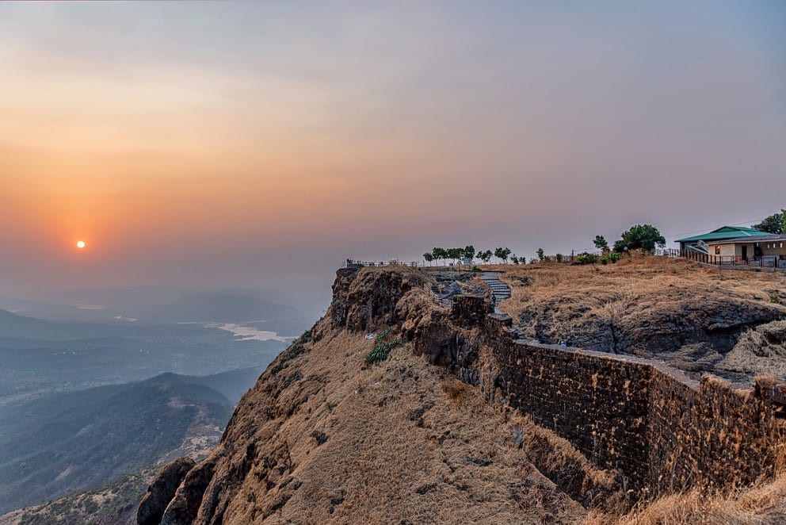

Sinhagad is an ancient hill fortress located at around 49 km southwest of the city of Pune, India. Previously known as Kondhana, the fort had been the site of many battles, most notably the Battle of Sinhagad in 1670. It is Located near the Pune district in Maharashtra.